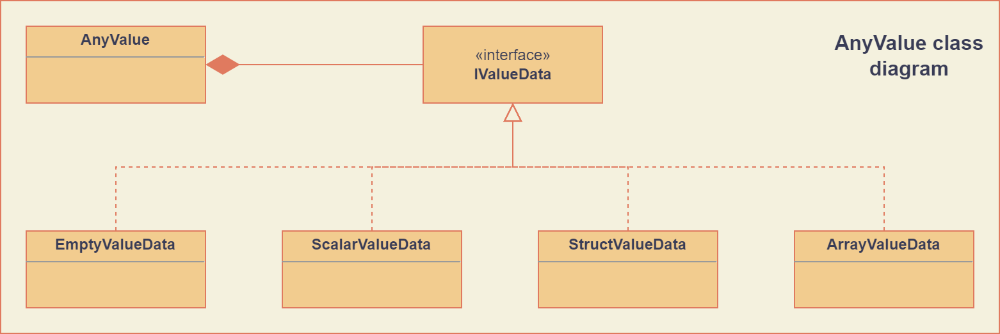

AnyValue
The AnyValue class represents runtime introspectable values that can be empty, scalar,
structured or array values. Objects of this type respect value semantics and can easily be passed,
assigned or returned by value.
Architecture
To support value semantics, the design is based on a single concrete AnyValue class that contains
polymorphic implementations for the different values supported (scalar, array, etc.)
The following figure shows the relevant part of the class diagram.
Although largely an implementation detail, the underlying IValueData of an AnyValue object
is never shared between different objects. This prevents nasty surprises when using these objects in
a multithreaded environment.
Construction
Typically, AnyValue objects are created in one of two ways:
Statically: they are encoded directly by the programmer.
Dynamically: the values are runtime generated by parsing some other data structure.
To accomodate for these different use cases, the AnyValue class provides different options to
create a specific value object.
For all AnyType objects, a corresponding AnyValue can be created with default values for its
leaf values by using the following constructor:
-
explicit AnyValue::AnyValue(const AnyType &anytype)
- Parameters:
anytype – Type of the constructed
AnyValue.
Construct a value object with the given type.
There also exists a constructor that takes both an AnyType and an AnyValue parameter, that
is provided mostly as a conversion constructor (see Conversion methods):
-
AnyValue::AnyValue(const AnyType &anytype, const AnyValue &anyvalue)
- Parameters:
anytype – Type of the constructed
AnyValue.anyvalue – Value for the constructed
AnyValue, with possible conversions.
- Throws:
InvalidConversionException – When the value couldn’t be converted to the given type.
Construct a value object with the given type and value.
Empty value
The empty value is provided as a default null value, containing no data.
Empty values are created by using the default AnyValue constructor:
// Use default constructor to create an empty value:
AnyValue empty_value{};
Scalar values
Scalar values provide the elementary building blocks of all AnyValue objects. They contain a
single arithmetic number (including booleans) or a string. The contained fundamental value type is
an std::string or one of the following type aliases:
-
type boolean
-
type char8
-
type int8
-
type uint8
-
type int16
-
type uint16
-
type int32
-
type uint32
-
type int64
-
type uint64
-
type float32
-
type float64
The scalar AnyValue objects can be constructed from elementary integral, floating point or
string types by using the converting constructors:
-
AnyValue::AnyValue(float64 val) const
Create an
AnyValueobject with the passed value as underlying fundamental value.
-
AnyValue::AnyValue(const char *val) const
Create an
AnyValueobject of String type and initialize it with the given value.
Due to these non-explicit constructors, it is possible to construct scalar AnyValue objects of
specific numeric types by numerical conversion from standard numeric literal values (see also
Conversion methods for the supported conversions):
// Create a 64 bit unsigned integer value from a standard integer literal:
AnyValue my_uint64{UnsignedInteger64Type, 56};
Array values
Array values represent fixed size arrays of values of the same type. These are constructed using a dedicated constructor:
// Create array value containing 20 boolean values and provide a name:
AnyValue my_bool_array(20, BooleanType, "TwentyBooleans");
The last argument of this constructor is optional and if not provided, the typename will be an empty string.
To construct an array value with specific element values in a single statement, a convenience
function can be used that accepts a list of AnyValue elements:
AnyValue my_int_array = ArrayValue(
{10, 20, 30},
"ThreeIntegers");
Structured values
Structured values correspond to the structured types (see Structured types). They are very similar to those type structures, but contain specific values in each of the leaf nodes, which are always scalar.
As for the structured types, structured values can be constructed by adding subvalues to an existing
structured value using the AnyValue::AddMember() method.
The following example shows how this method can be used to populate a structured value:
// Create simple structured value containing:
// - an account name of StringType
// - an account number of UnsignedInteger64Type
// - an activated flag of BooleanType
auto account_val = EmptyStruct("AccountType");
account_val.AddMember("AccountName", {StringType, "John Vegas"});
account_val.AddMember("AccountNumber", {UnsignedInteger64Type, 44443789});
account_val.AddMember("Activated", true);
As can be seen in the previous example, the value argument for the AddMember method can omit
the preferred type if the automatically deduced type is correct (Boolean in the last call).
Again, one can create structures of structures, structures of arrays, arrays of structures, etc.
To facilitate the static creation of structured values, a dedicated constructor is provided that accepts a braced-init-list of pairs of member names and values. This constructor also allows to provide a name for the type, which then needs to be passed as a final optional argument to the constructor:
// Create a customer value that contains:
// - a name (StringType)
// - an address structure, containing:
// - a street field (StringType)
// - a number field (UnsignedInteger16Type)
// - a city field (StringType)
// And provide a type name: "CustomerType".
AnyValue customer_val({
{"name", {StringType, "John Vegas"}},
{"address", {
{"street", {StringType, "Prosperity Road"}},
{"number", {UnsignedInteger16Type, 1255}},
{"city", "San Francisco"}
}}
}, "CustomerType");
Copy and move
The AnyValue class provides copy and move constructors and assignment operators that are only
slightly stricter than their AnyType counterparts. In general, all assignments are allowed,
except when they would result in different elements of an array having different types. This means
that assignment to array elements, or descendents thereof, will result in three alternatives:
Source and destination value have the exact same type: the destination will become a copy of the source.
The source value can be correctly converted to the destination type: the destination value will be a conversion of the source.
Failure to assignment will throw an exception of type
InvalidConversionException.
For the scalar types, conversion requires that the underlying value can be converted to the destination type and that it fits into that representation (e.g. a negative integer cannot be assigned to an unsigned value type).
For array values, conversion requires equal length arrays and compatibility for each of their elements.
Structured values can be converted to one another if they have the same member names (in the exact same order) and their member values are compatible. Note that for both array and structured value conversion, the type name is ignored.
Empty values can only be converted to and from other empty values.
The following example shows this behavior:
// Create a boolean value representing 'true':
AnyValue my_true{true};
// Assign this boolean value to an integer AnyValue:
AnyValue my_int{UnsignedInteger32Type}; // gets default value zero
my_int = my_true; // my_int now contains the boolean value 'true' (type changed)
// Array element assignment:
AnyValue my_array = ArrayValue({0, 1, 2, 3});
my_array[1] = my_true; // The second array element now contains the value '1', converted from
// boolean value 'true'.
AnyValue my_struct{{
{"a": {UnsignedInteger8Type, 42}}
}};
my_array[0] = my_struct; // ERROR! Throws InvalidConversionException.
Query methods
The AnyValue API contains a number of methods for querying specific information about the value.
These are listed here.
-
TypeCode AnyValue::GetTypeCode() const
- Returns:
TypeCode enumerator.
Retrieve the typecode enumerator for this object.
-
AnyType AnyValue::GetType() const
- Returns:
AnyTypeof this object.
Retrieve an
AnyTypeobject, representing this object’s type.
-
std::string AnyValue::GetTypeName() const
- Returns:
Type name.
Retrieve the type name.
-
std::vector<std::string> AnyValue::MemberNames() const
- Returns:
List of member names.
Return an ordered list of all direct member names.
-
std::size_t AnyValue::NumberOfMembers() const
- Returns:
Number of direct members for structured values and zero otherwise.
Retrieve the number of direct members. This is always zero for non-structured values.
-
std::size_t AnyValue::NumberOfElements() const
- Returns:
Number of elements for an array value and zero otherwise.
Retrieve the number of elements in the array. Returns zero when the current value is not an array value.
-
bool AnyValue::HasField(const std::string &fieldname) const
- Parameters:
fieldname – Name of the subvalue to search for.
- Returns:
truewhen a subvalue with the given fieldname exists.
Check the presence of a subvalue with the given name. Composite fieldnames are supported.
Conversion methods
During assigment and construction, a number of implicit conversions can take place. These always concern scalar types and are build onto the converting constructors and the following explicit conversion method:
-
template<typename T>
T AnyValue::As() const - Returns:
The underlying value, cast to
T.- Throws:
InvalidConversionException – When value couldn’t be converted to
T.
Specializations of this function template are explicitly declared and perform the required conversions:
Booleans to numeric values: zero for
falseand one fortrue.Numeric values to booleans:
falseif zero,trueotherwise.Numeric values to numeric values: standard conversion if the destination type can hold the source value.
All other scalar conversions are not allowed and throw an exception.
The AnyValue::As() method also supports a trivial cast to AnyValue, which just returns a
copy of the object.
The following examples show the usage of this conversion method:
// Construct an unsigned 32 bit integer with value 19 and cast this to different types:
AnyValue val{UnsignedInteger32Type, 19};
bool is_non_zero = val.as<boolean>(); // is_non_zero is true
int16 signed_val = val.as<int16>(); // signed_val is also 19
There is also a member function that tries to convert another AnyValue to the type of the
current AnyValue:
-
void AnyValue::ConvertFrom(const AnyValue &other)
- Parameters:
other –
AnyValueobject to convert from.- Throws:
InvalidConversionException – If this operation could not successfully convert between
the different types.
Element access
The AnyValue class overloads the index operators to provide a natural way to access element
values of a structured value. Array values also support integer indices for element access.
The overloaded operators are:
-
AnyValue &AnyValue::operator[](std::string fieldname)
Try to retrieve a reference to the member that is identified by the fieldname. This fieldname can describe non-direct members by encoding the navigation to deeper lying members. A dot (
.) is used to separate individual names of structure members, while square brackets are used to address array elements.- Parameters:
fieldname – String encoding the path to a specific underlying value.
- Returns:
AnyValueobject if member value was found.- Throws:
InvalidOperationException – For values that do not support element access (empty or scalar values) or for fieldnames that cannot be correctly parsed/interpreted (wrong format or unknown key).
-
const AnyValue &AnyValue::operator[](std::string fieldname) const
Const version of the previous operator overload.
-
AnyValue &AnyValue::operator[](std::size_t idx)
This overload is only supported for array values and is provided as a convenience, while it doesn’t require passing integer indices as string values.
-
const AnyValue &AnyValue::operator[](std::size_t idx) const
Const version of the previous operator overload.
Accessing direct elements of an array value can thus be achieved by passing either a string representation of the index or by passing it directly:
// Create array value of 5 booleans with default values:
AnyType my_booleans{5, BooleanType};
// Change elements with index 2 and 3 to 'true':
my_booleans["[2]"] = true;
my_booleans[3] = true;
Modifier methods
The AnyValue API provides modifier methods to extend structured or array values. These methods
are mostly used for runtime creation of AnyValue objects, e.g. during parsing. Note that the
effect of these methods includes a change of the underlying type. Hence these methods will throw an
exception of type InvalidOperationException when called on an element of an array or one of its
descendents.
-
AnyValue &AnyValue::AddMember(const std::string &name, const AnyValue &value)
- Parameters:
name – Member name to use.
value –
AnyValueobject for the member value.
- Returns:
Reference to
thisto allow chaining such calls.- Throws:
InvalidOperationException – If this operation is not supported (e.g. not a structured value or a structured array element).
Add a member value for this structured value with the given name and value. Empty values are not allowed as member values.
-
AnyValue &AnyValue::AddElement(const AnyValue &value)
- Parameters:
value –
AnyValueobject to add as an element.- Returns:
Reference to
thisto allow chaining such calls.- Throws:
InvalidOperationException – If this operation is not supported (not an array value or an element of an array of arrays).
Add an element to the end of this array value with the given value.
Comparison operators
Simple comparison of AnyValue objects is supported by overloading both the equality and
inequality operator:
-
bool AnyValue::operator==(const AnyValue &other) const
- Parameters:
other – Other
AnyValueobject to compare with the current.- Returns:
truewhen equal,falseotherwise.
-
bool AnyValue::operator!=(const AnyValue &other) const
- Parameters:
other – Other
AnyValueobject to compare with the current.- Returns:
truewhen not equal,falseotherwise.
Note
Equality in the context of AnyValue objects requires compatibility of the embedded value
leafs, rather than the more strict equality defined for AnyType objects:
Empty values are only equal to other empty values.
Scalar values are only equal when a successfull conversion of one value to the other’s type is exactly equal to the other’s value and the other way around (to assure symmetry).
Structured values are only equal to other structured values with the same type name, member names and values that compare equal. The order of members is also taken into account.
Array values are only equal to other array values with the same name, number of elements and elements that compare equal.
In cases where a strict equality test is required, one could test equality of both types and values.
A custom comparison function is also provided that handles arithmetic types (excluding ‘bool’, ‘char8’ and ‘string’):
-
CompareResult Compare(const AnyValue &lhs, const AnyValue &rhs)
- Parameters:
lhs –
AnyValueobject on the left hand side.rhs –
AnyValueobject on the right hand side.
- Returns:
Enumerator indicating if lhs is less, greater, equivalent to rhs or if they are
unordered.
If one of the types is floating point, the comparison will use the largest floating point type among the given types as the common type (‘float64’ if there is one, ‘float32’ otherwise). Integral comparisons are only supported between types that are both signed or both unsigned. In these cases, the widest signed or unsigned integral type is used (‘int64’ or ‘uint64’). For all comparisons that are not supported (for example ‘string’, structures, signed with unsigned, etc.), the function returns ‘Unordered’.
Global functions
Besides the serialization/parsing functions, the software module provides the following global functions:
-
bool TryConvert(AnyValue &dest, const AnyValue &src)
- Parameters:
dest –
AnyValueobject to assign to.src –
AnyValueobject to convert from.
- Returns:
trueon successful conversion.
Try to convert an AnyValue to another AnyValue. When conversion fails, the destination is left unchanged and false is returned. This is basically a non-throwing version of
void AnyValue::ConvertFrom(const AnyValue&).
-
bool TryAssign(AnyValue &dest, const AnyValue &src)
- Parameters:
dest –
AnyValueobject to assign to.src –
AnyValueobject to assign from.
- Returns:
trueon successful assignment.
Try to assign an AnyValue to another AnyValue. When assignment or conversion fails, the destination is left unchanged and false is returned. This is basically a non-throwing version of
AnyValue& AnyValue::operator=(const AnyValue&)().
-
bool Increment(AnyValue &value)
- Parameters:
value –
AnyValueobject to increment.- Returns:
trueon successful increment.
Try to increment (add 1) an AnyValue. This is only supported for arithmetic types (excluding ‘bool’, ‘char8’ and ‘string’). In case of integer types, the behavior is defined to wrap around the maximum value to the minimum value (also for signed types).
-
bool Decrement(AnyValue &value)
- Parameters:
value –
AnyValueobject to decrement.- Returns:
trueon successful decrement.
Try to decrement (subtract 1) an AnyValue. This is only supported for arithmetic types (excluding ‘bool’, ‘char8’ and ‘string’). In case of integer types, the behavior is defined to wrap around the minimum value to the maximum value (also for signed types).